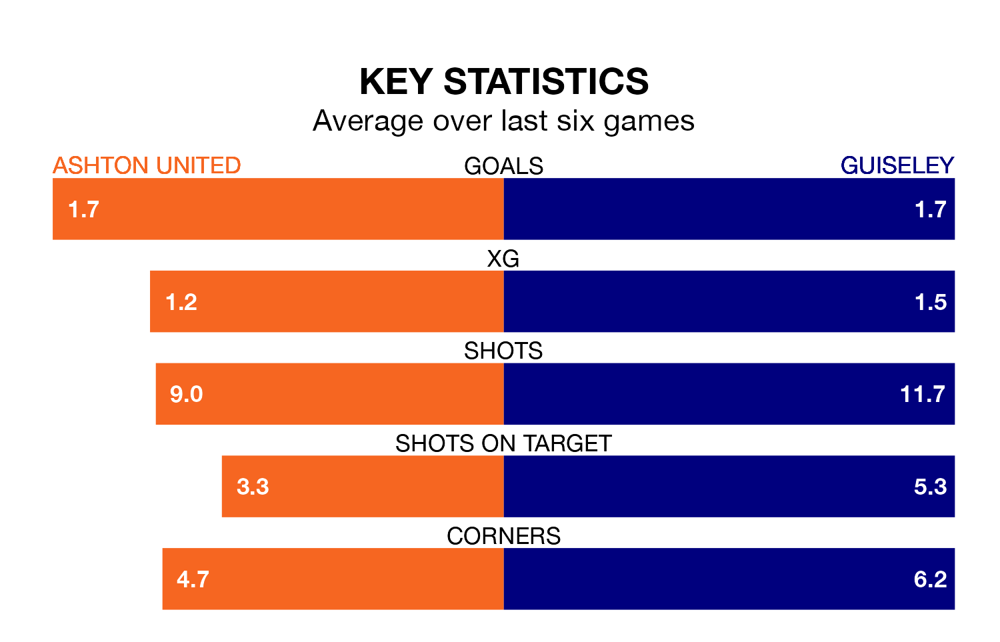

Ashton United host Guiseley on Saturday at Hurst Cross in Northern Premier League.
In their last league match, on February 3, Ashton lost to Worksop Town 1-0 away.
Guiseley won, 4-3 away at Radcliffe Borough.
In the last 10 years, Ashton and Guiseley have played each other on six occasions. Ashton won four of them, Guiseley one, and they drew once.
On average, Ashton scored 1.3 goals and the Lions 0.7 in those matches.
Their last meeting was on September 23, when Ashton won 1-0 away.
With 50 goals in 27 games so far this season, Guiseley are scoring more than average in the league with 1.9 goals per game. And they are conceding fewer than average, letting in 43 goals at a rate of 1.6 per game.
Ashton, meanwhile, are average scorers, with 1.7 goals per game. They have also conceded 1.7 goals per game.
United are in disappointing form in Northern Premier League, with one win and three draws from their last six games.
With three wins and three losses over that period, the Lions's form is better – they have taken nine points from 18, compared to the home side's six.
The visitors are ninth in the table after 27 games, of which they have won 13 and drawn six, earning 45 points.
Ashton are one place behind Guiseley in 10th, with 12 wins and eight draws putting them on 44 points.
Updated: 14:59 (UTC), 05/02/24